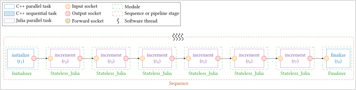
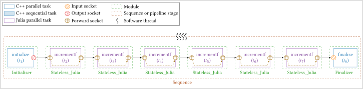
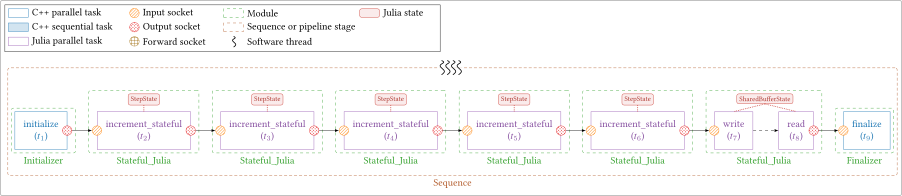
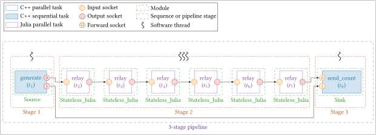
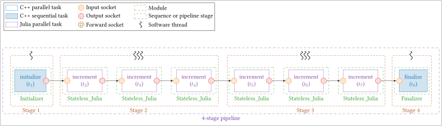
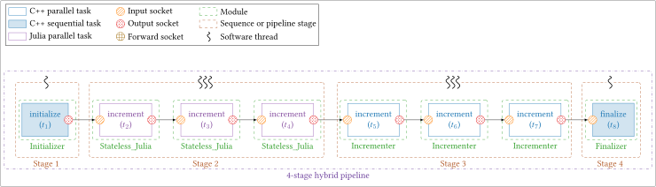

Julia Interoperability¶
StreamPU provides native, zero-copy, multi-threaded interoperability with the
Julia programming language through Julia's C API
(libjulia). This allows users to write signal-processing or numerical tasks
directly in Julia while relying on StreamPU to orchestrate dataflow buffers,
inter-frame batching, multi-threaded Sequence replication, and multi-stage
Pipeline execution alongside C++ modules.
Warning
To use Julia modules, Julia must be installed on the system and StreamPU
must be compiled with the SPU_JULIA preprocessor definition via the
following CMake option:
jl_adopt_thread C API feature
(introduced in Julia 1.9). StreamPU has been tested from Julia 1.10 to
Julia 1.13.
Basics¶
Runtime Initialization¶
Before instantiating or evaluating any Julia module, initialize the Julia
runtime once at the start of main() via spu::tools::Julia::init():
#include <streampu.hpp>
using namespace spu;
int main(int argc, char** argv)
{
tools::Signal_handler::init();
tools::Julia::init(256); // starts libjulia if needed and allocates 256 GC root slots per thread
// ... build and execute StreamPU sequences or pipelines ...
tools::Julia::exit(0); // optional: runs Julia atexit hooks before returning
return 0;
}
Note
tools::Julia::init() automatically calls jl_init() if the Julia engine
is not already running, compiles StreamPU's internal GC-rooting helpers,
and preserves any pre-existing SIGINT handler (such as
tools::Signal_handler::init()) so Ctrl+C cleanly interrupts running
sequences and pipelines.
Stateless Modules (Stateless_Julia)¶
Use spu::module::Stateless_Julia for pure dataflow tasks that only depend on
their input/output/forward sockets and scalar constants:
module::Stateless_Julia incr;
runtime::Task& t = incr.create_task("increment");
incr.create_socket_in<uint8_t>(t, "in", data_length);
incr.create_socket_out<uint8_t>(t, "out", data_length);
incr.create_constant<uint32_t>(t, step_value);
incr.create_codelet(t, R""""(
function increment(sck_in, sck_out, cst_step, rnt_frame_id, rnt_n_frames_per_wave)
step = eltype(sck_in)(cst_step)
@inbounds for n in eachindex(sck_in)
sck_out[n] = sck_in[n] + step
end
return 0
end
)"""");
Codelet Argument Convention¶
Every Stateless_Julia codelet receives its arguments in the exact registration
order below and must return an integer status code (0 for
runtime::status_t::SUCCESS):
function <task_name>(sck_1, ..., sck_M, cst_1, ..., cst_K, rnt_frame_id, rnt_n_frames_per_wave)
# ...
return 0
end
- Sockets (
sck_1, ..., sck_M): Zero-copy 1D JuliaVector{T}(Array{T, 1}) views wrapped directly aroundStreamPU's C++ socket buffers (1-based indexing in Julia). - Constants (
cst_1, ..., cst_K): Scalar values registered on the task viacreate_constant<T>(t, val). rnt_frame_id(UInt32):0-based index of the starting frame for the current wave execution (0whenn_frames == 1or in single-wave mode).rnt_n_frames_per_wave(UInt32): Number of frames processed per codelet call.
Stateful Modules (Stateful_Julia)¶
Use spu::module::Stateful_Julia when tasks require persistent Julia objects
across invocations (such as filter histories, counters, lookup tables, or
pre-allocated scratch workspaces):
module::Stateful_Julia filter;
filter.create_state("MyConfig(0.95f0)", /*shared=*/true, R""""(
struct MyConfig
alpha::Float32
end
)"""");
filter.create_state("MyWorkspace(zeros(Float32, 1024))", /*shared=*/false, R""""(
mutable struct MyWorkspace
history::Vector{Float32}
end
)"""");
runtime::Task& t = filter.create_task("process");
filter.create_socket_in<float>(t, "in", 1024);
filter.create_socket_out<float>(t, "out", 1024);
filter.create_codelet(t, R""""(
function process(cfg::MyConfig, ws::MyWorkspace, sck_in, sck_out, rnt_frame_id, rnt_n_frames_per_wave)
α = cfg.alpha
@inbounds for i in eachindex(sck_in)
y = (1.0f0 - α) * sck_in[i] + α * ws.history[i]
ws.history[i] = y
sck_out[i] = y
end
return 0
end
)"""");
- Argument order: Registered state objects (
stt_1, ..., stt_S) are prepended before the socket arguments when invoking any task belonging to thatStateful_Juliamodule. Multiple tasks within the same module share the module's state instances. - Cloning semantics (
shared = falsevs.shared = true):shared = false(default): WhenSequenceorPipelineclones the module across worker threads, each clone receives an independentBase.deepcopyof the Julia state, guaranteeing lock-free thread safety for mutable workspaces.shared = true: Clones keep a shallow reference to the exact same Julia object in memory, avoiding redundant duplication of large immutable data structures (e.g., great for constants).
Loading Codelets & Exception Safety¶
mod.create_codelet(t, R""""(
function my_task(sck_in, sck_out, rnt_frame_id, rnt_n_frames_per_wave)
sck_out .= sck_in
return 0
end
)"""");
StreamPU looks up a Julia function matching t.get_name(). An
explicit third argument create_codelet(t, code, "custom_func_name") can
override the function name.
// For states (Stateful_Julia only):
mod.create_state_file("StepState(1, 0)", /*shared=*/false, "path/to/states.jl");
// For codelets:
mod.create_codelet_file(t, "path/to/codelets.jl");
.jl file and binds the task to t.get_name() (or
to an optional third argument julia_function_name).
Safe vs. Unsafe Invocation (set_jl_safety)¶
mod.set_jl_safety(true)(default): Invokes codelets inside a Juliatry ... catchwrapper (StreamPU.safe_call). Any uncaught Julia exception is formatted with its full Julia stacktrace and rethrown in C++ as aspu::tools::runtime_error. Recommended during development and debugging.mod.set_jl_safety(false): Callsjl_calldirectly without exception wrapping, reducing C++-to-Julia call overhead below ~100 ns. Recommended for validated hot loops and benchmarks.
Performance & Multi-Threading Best Practices¶
Guidelines for High-Throughput Multi-Threaded Execution
- Let
StreamPUmanage threads:SequenceandPipelineautomatically run stages containing Julia modules onThread_pool_Julia(adopting C++ worker threads viajl_adopt_thread()and enteringGC_SAFEwhile waiting on barriers or inter-stage buffers), while pure C++ stages run onThread_pool_standard. Do not useThreads.@threadsor Julia task-switching I/O (such asprintln) inside codelets running on adopted threads. - Zero heap allocation in codelets: Mutate output/forward sockets
in-place and pre-allocate temporary arrays inside a
Stateful_Juliaworkspace (shared = false) so hot loops do not trigger stop-the-world GC sweeps. - JIT warmup &
precompile: The first execution compiles Julia methods with LLVM. Run a warmup iteration or add explicitprecompile(my_task, (...))directives at the bottom of your.jlfiles before measuring latency or throughput.
Validation Tests & Examples¶
StreamPU includes dedicated Julia tests in the tests/julia directory (built
into ./bin/ when -DSPU_LINK_JULIA=ON and -DSPU_TESTS=ON are enabled). They
serve both as validation suites and as complete working templates.
Simple Stateless Chains¶
Mirroring the C++ bootstrap chains, these two tests chain an Initializer
(\(t_1\)), six Stateless_Julia incrementers (\(t_{[2:7]}\)) that each add "\(+1\)"
to every byte in the frame, and a Finalizer (\(t_8\)) that verifies the output
equals the initial values "\(+6\)" across all threads and inter-frames. Both
support -J (--jl-safe) to test safe exception wrapping and -E
(--jl-extern) to load codelets from tests/julia/codelets.jl.

Stateless_Julia module exposes an increment task with one input
socket (in) and one output socket (out). Source code:
tests/julia/simple_chain_julia.cpp.
Command Line Arguments
The following verbatim is a copy-paste from the -h stdout:
usage: ./bin/test-simple-chain-julia [options]
-t, --n-threads Number of threads to run in parallel [10]
-f, --n-inter-frames Number of frames to process in one task [1]
-s, --sleep-time Sleep time duration in one task (microseconds) [5]
-d, --data-length Size of data to process in one task (in bytes) [2048]
-e, --n-exec Number of sequence executions [100000]
-o, --dot-filepath Path to dot output file [empty]
-c, --copy-mode Enable to copy data in sequence (performance will be reduced) [false]
-b, --step-by-step Enable step-by-step sequence execution (performance will be reduced) [false]
-p, --print-stats Enable to print per task statistics (performance will be reduced) [false]
-J, --jl-safe Enable Julia safe mode (throw exceptions to C++) [false]
-E, --jl-extern Evaluate the Julia code from an external file [false]
-g, --debug Enable task debug mode (print socket data) [false]
-v, --verbose Enable verbose mode [false]
-h, --help This help [false]

Stateless_Julia module exposes an incrementf task with a single
forward socket (fwd), mutating the shared buffer in-place (sck_fwd[n] +=
1) without extra memory copies. Source code:
tests/julia/simple_chain_fwd_julia.cpp.
Command Line Arguments
The following verbatim is a copy-paste from the -h stdout:
usage: ./bin/test-simple-chain-fwd-julia [options]
-t, --n-threads Number of threads to run in parallel [10]
-f, --n-inter-frames Number of frames to process in one task [1]
-s, --sleep-time Sleep time duration in one task (microseconds) [5]
-d, --data-length Size of data to process in one task (in bytes) [2048]
-e, --n-exec Number of sequence executions [100000]
-o, --dot-filepath Path to dot output file [empty]
-c, --copy-mode Enable to copy data in sequence (performance will be reduced) [false]
-b, --step-by-step Enable step-by-step sequence execution (performance will be reduced) [false]
-p, --print-stats Enable to print per task statistics (performance will be reduced) [false]
-J, --jl-safe Enable Julia safe mode (throw exceptions to C++) [false]
-E, --jl-extern Evaluate the Julia code from an external file [false]
-g, --debug Enable task debug mode (print socket data) [false]
-v, --verbose Enable verbose mode [false]
-h, --help This help [false]
Stateful Chain¶
This test (tests/julia/stateful_chain_julia.cpp) validates persistent state
management, multi-task state sharing, and independent Base.deepcopy state
cloning across threads in spu::module::Stateful_Julia.

The sequence combines two stateful patterns between the Initializer (\(t_1\))
and Finalizer (\(t_9\)):
- Five single-task
Stateful_Juliamodules (\(t_{[2:6]}\)): Each instance owns a mutableStepState(step, calls)initialized to(1, 0). At each execution (rnt_frame_id == 0),increment_statefulincrementsstt_step.callsand addsstt_step.stepto the frame data. - One two-task
Stateful_Juliamodule (\(t_7, t_8\)): Exposes bothwrite(\(t_7\), bound towrite_buf) andread(\(t_8\), bound toread_buf) sharing a commonSharedBufferState(buf): writeincrements the incoming data from itsinsocket by "\(+1\)" and stores the result inside the persistent Julia bufferstt_buf.buf(with no output data socket).readis scheduled afterwritevia task binding (rw("read") = rw("write")) with no input data socket, and copies the frame directly out ofstt_buf.bufinto itsoutsocket.
At the end of the run, the test checks both that the Finalizer values equal
the initial values "\(+6\)", and—by inspecting each cloned module's Julia
StepState via get_states()—that every thread mutated its own isolated state
copy whose calls counters sum to n_exec.
Command Line Arguments
The following verbatim is a copy-paste from the -h stdout:
usage: ./bin/test-stateful-chain-julia [options]
-t, --n-threads Number of threads to run in parallel [10]
-f, --n-inter-frames Number of frames to process in one task [1]
-s, --sleep-time Sleep time duration in one task (microseconds) [5]
-d, --data-length Size of data to process in one task (in bytes) [2048]
-e, --n-exec Number of sequence executions [100000]
-o, --dot-filepath Path to dot output file [empty]
-c, --copy-mode Enable to copy data in sequence (performance will be reduced) [false]
-b, --step-by-step Enable step-by-step sequence execution (performance will be reduced) [false]
-p, --print-stats Enable to print per task statistics (performance will be reduced) [false]
-J, --jl-safe Enable Julia safe mode (throw exceptions to C++) [false]
-E, --jl-extern Evaluate the Julia code from an external file [false]
-g, --debug Enable task debug mode (print socket data) [false]
-v, --verbose Enable verbose mode [false]
-h, --help This help [false]
Multi-Stage Pipelines¶
This test (tests/julia/simple_pipeline_julia.cpp) validates
spu::runtime::Pipeline execution when stages contain Julia tasks, including
inter-stage adaptor synchronization, GC-safe thread waiting (--gc-stress), JIT
warmup (--warmup), and hybrid cohabitation between Thread_pool_Julia stages
and pure C++ Thread_pool_standard stages (--hybrid).

--in-filepath (-i) is provided:
- Stage 1 (1 C++ thread): Sequential
Source_user_binaryreading bytes from the input file (generate, \(t_1\)). - Stage 2 (
-tJulia threads): Six replicatedStateless_Juliarelaytasks (\(t_{[2:7]}\)) copying frames across worker threads managed byThread_pool_Julia. - Stage 3 (1 C++ thread): Sequential
Sink_user_binary(send_count, \(t_8\)) writing exact byte counts to disk, followed by a byte-for-byte comparison between the input and output files.

--in-filepath is omitted:
- Stage 1 (1 C++ thread):
Initializer(\(t_1\)). - Stage 2 (
-tJulia threads): ThreeStateless_Juliaincrementmodules (\(t_{[2:4]}\)). - Stage 3 (
-tJulia threads): ThreeStateless_Juliaincrementmodules (\(t_{[5:7]}\)). - Stage 4 (1 C++ thread):
Finalizer(\(t_8\)) verifying all frames equal initial values "\(+6\)".
Adding -G (--gc-stress) allocates temporary Julia heap vectors inside
every increment call across both multi-threaded Julia stages concurrently,
validating GC_SAFE transitions across pipeline adaptors.

-H (--hybrid):
- Stage 2 runs three
Stateless_Juliamodules onThread_pool_Julia(adopted threads coordinated with Julia's GC). - Stage 3 runs three native C++
Incrementermodules onThread_pool_standard(pure C++ threads completely decoupled from Julia's runtime and GC pauses).
Command Line Arguments
The following verbatim is a copy-paste from the -h stdout:
usage: ./bin/test-simple-pipeline-julia [options]
-t, --n-threads Number of threads to run in parallel [10]
-f, --n-inter-frames Number of frames to process in one task [1]
-s, --sleep-time Sleep time duration in one task (microseconds) [5]
-d, --data-length Size of data to process in one task (in bytes) [2048]
-e, --n-exec Number of sequence executions (when no input file is given) [100]
-u, --buffer-size Size of the buffer between the different stages of the pipeline [16]
-o, --dot-filepath Path to dot output file [empty]
-i, --in-filepath Path to the input file (used to generate bits of the chain) [empty]
-j, --out-filepath Path to the output file (written at the end of the chain) ["file_julia.out"]
-c, --copy-mode Enable to copy data in sequence (performance will be reduced) [false]
-b, --step-by-step Enable step-by-step sequence execution (performance will be reduced) [false]
-p, --print-stats Enable to print per task statistics (performance will be reduced) [false]
-g, --debug Enable task debug mode (print socket data) [false]
-q, --force-sequence Force sequence instead of pipeline [false]
-w, --active-waiting Enable active waiting in the pipeline synchronizations [false]
-k, --task-autoalloc Enable task SOUT autoalloc mode [false]
-J, --jl-safe Enable Julia safe mode (throw exceptions to C++) [false]
-E, --jl-extern Evaluate the Julia code from an external file [false]
-H, --hybrid Mix C++ Incrementer and Julia Stateless_Julia stages [false]
-G, --gc-stress Allocate temporary Julia arrays to stress-test multi-stage GC [false]
-W, --warmup Run a 1-stream warmup execution before the main execution [false]
-h, --help This help [false]